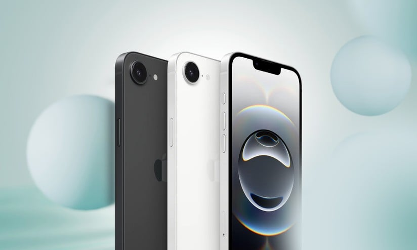

Nos últimos anos, a Apple tem surpreendido o mercado com inovações que vão além do design e do desempenho. Com o lançamento do iPhone 16e, a grande novidade não está apenas nas câmeras ou no processador, mas sim em sua bateria revolucionária, desenvolvida com uma tecnologia de íons de lítio de nova geração.
Essa bateria promete até três dias de uso contínuo, algo que parecia impossível até pouco tempo atrás. De acordo com especialistas, o segredo está em uma composição química aprimorada, onde elementos como o grafeno desempenham papel fundamental. Essa inovação não só aumenta a durabilidade, mas também melhora a segurança térmica, reduzindo os riscos de superaquecimento.
Um dos grandes destaques está na eficiência energética. Segundo a Apple, o novo sistema de gerenciamento permite que aplicativos pesados, como jogos e softwares de edição, consumam até 40% menos energia.
Outro ponto interessante é a forma como a bateria interage com o sistema
operacional. Em testes, até mesmo fórmulas matemáticas complexas — como
o cálculo de X2 + Y1 — puderam ser
processadas com menor gasto energético, algo que reforça a ideia de um
chip e uma bateria trabalhando em perfeita sinergia.
Para muitos analistas, o termo longevidade será a palavra-chave dessa nova geração. Afinal, estamos falando de um aparelho que pode manter seu desempenho ideal por anos sem a necessidade de trocas constantes de bateria, algo que costuma ser uma dor de cabeça para muitos usuários.
“A tecnologia é melhor quando conecta as pessoas.” - Matt Mullenweg

Para mais informações consulte notas adicionais